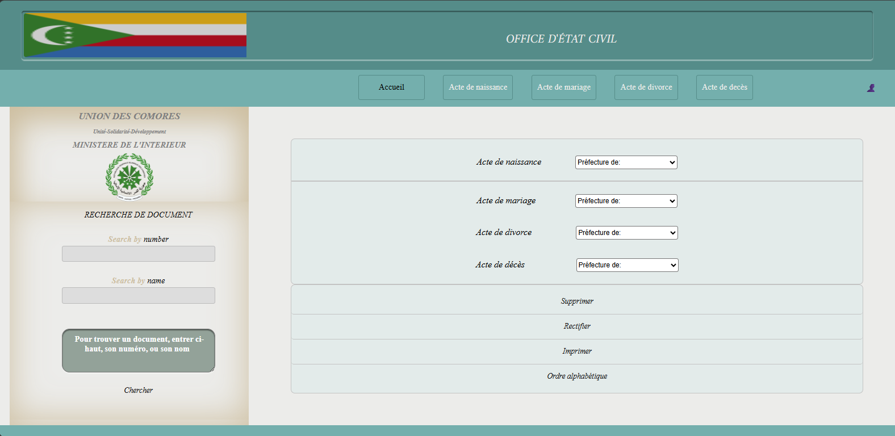
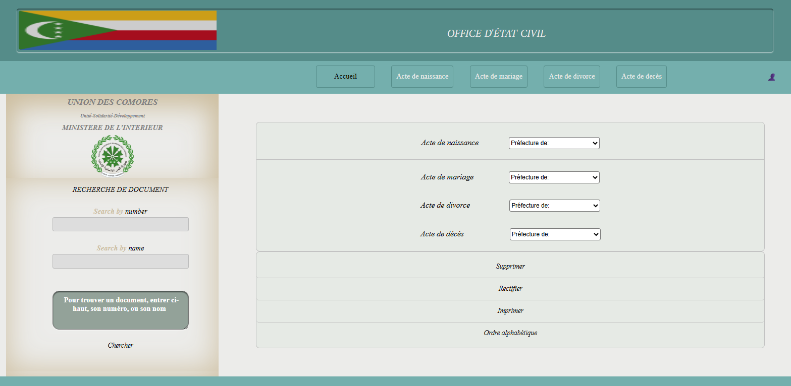
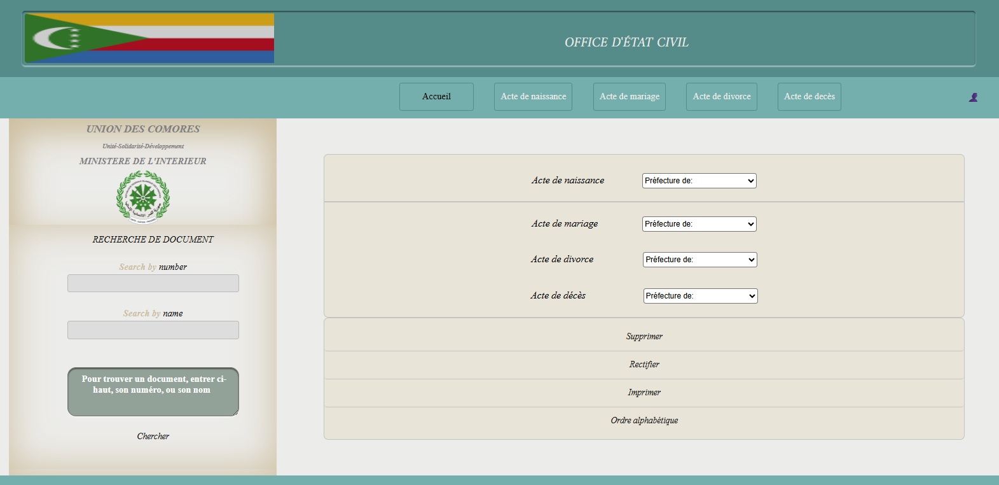
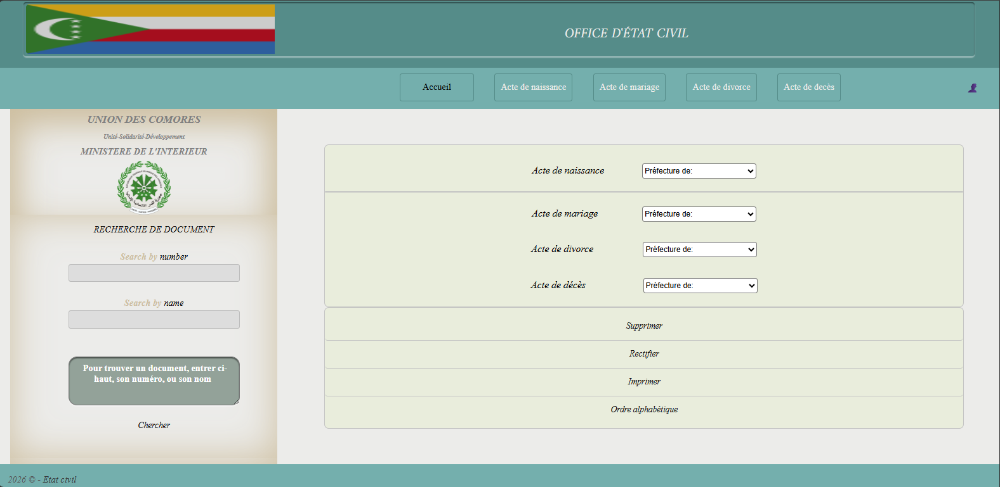
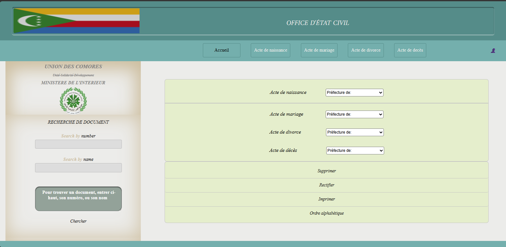
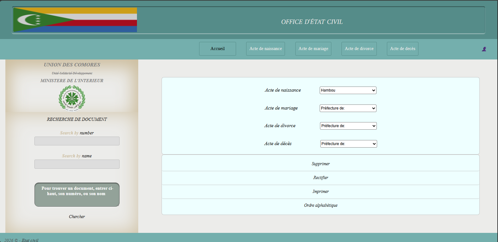

🧱 1) Flexbox
Objets: ...
/* 11111111111111111111111111111 */
/*
* ✔️ flex-direction: Dirige l'axe principale(row/column)
*
* C'est qu'elle se dirige vers le bas
* Appliquer une "direction horizontale"
*
*/
.tabledroite{
flex-direction: row;
}
/* ✔️ align-items:strech; ( à tester sur le parent) */
/* ✔️ align-items:strech; ( à tester sur le parent) */
/* ✔️ Voir dark.css: lignes61 et 68 */
/* 📌 Ouvrir la possibilité d'aller à la ligne - contrairement à nowrap */
.parent {
display: flex;
flex-wrap:wrap;
}
/* 📌 Obliger d'aller à la ligne */
.enfant {
width:100%;
}
/*
* ✔️ flex-direction:row; Direction par défaut du flexbox
* ✔️ align-items:strech; Dirige l'axe secondaire(tire vers le bas)
*
*/
parent {
display:flex; /* Aligne les 3 div horizontalement */
align-items:strech; /* Tire chacune vers le bas sur toute la hauteur disponible */
}
/* ✔️ align-items:strech; */
parent {
display:flex;
align-items:strech;
}
🧱 2) Grid
Objets: ...
/* ✔️ Solution1 */
////////////////////////
/* ✔️ Solution1 */
|||||||||||||||||||||||||||-
/* ✔️ Solution3 */
2.3
/* ✔️ Solution1 */
2.4
🧱 3) Alternatives à l'olive pâle(#e5eecc)
Objets: Pannel de commande - slide.css(lignes4,111,243,255)





